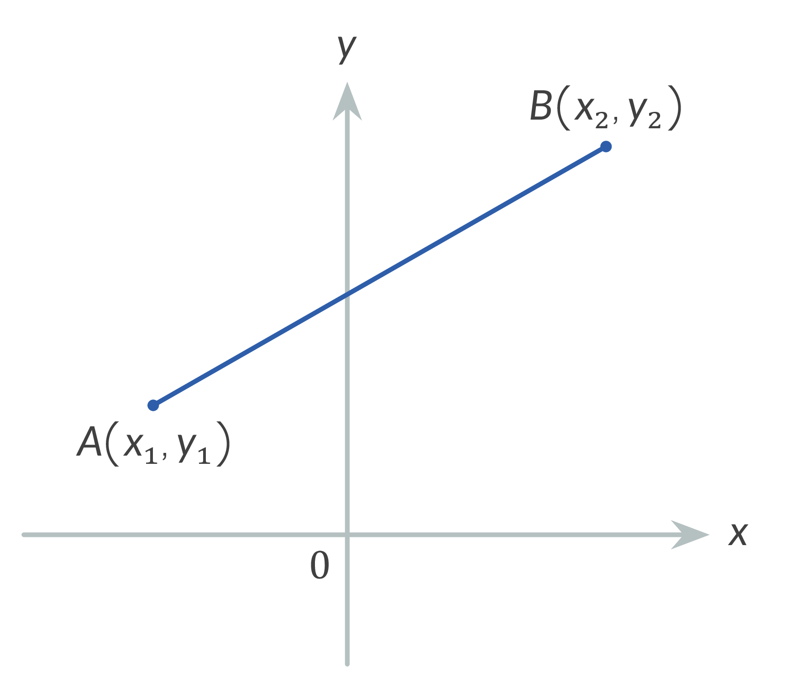
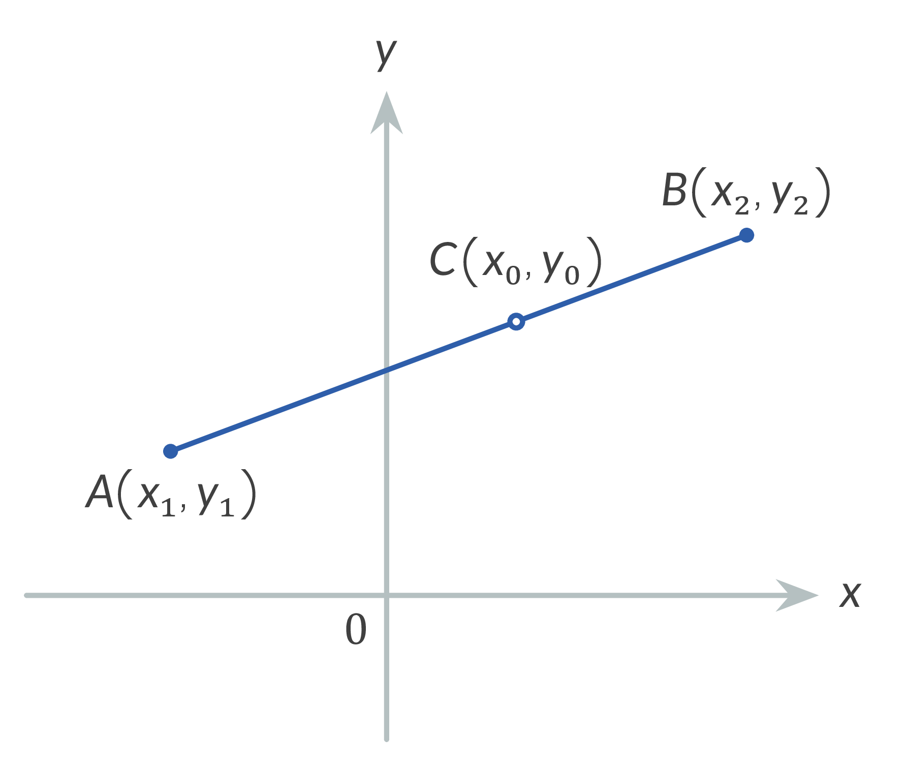
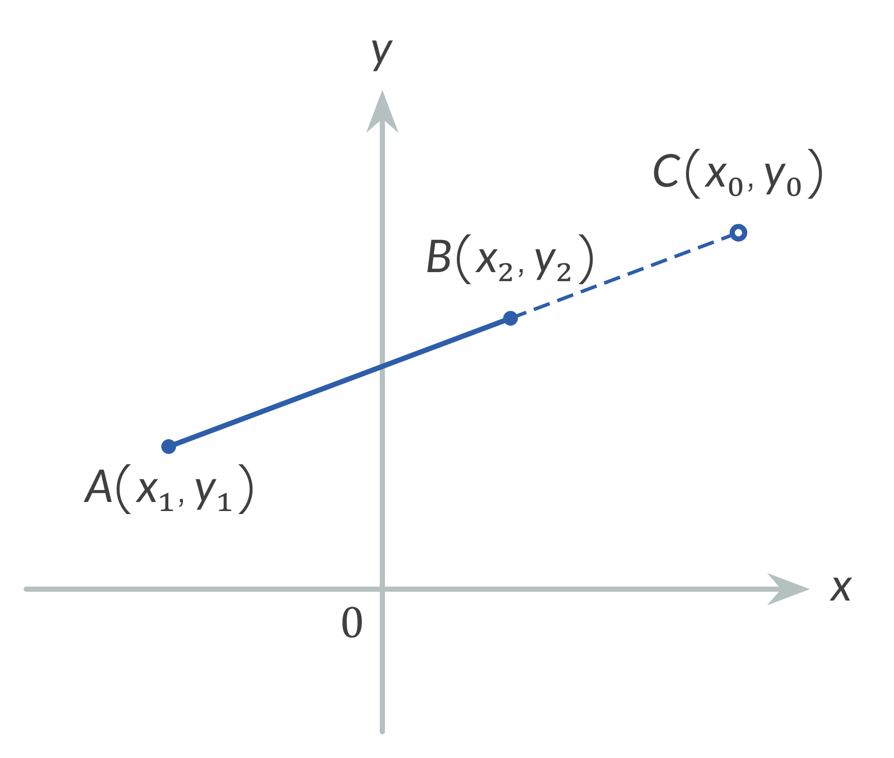
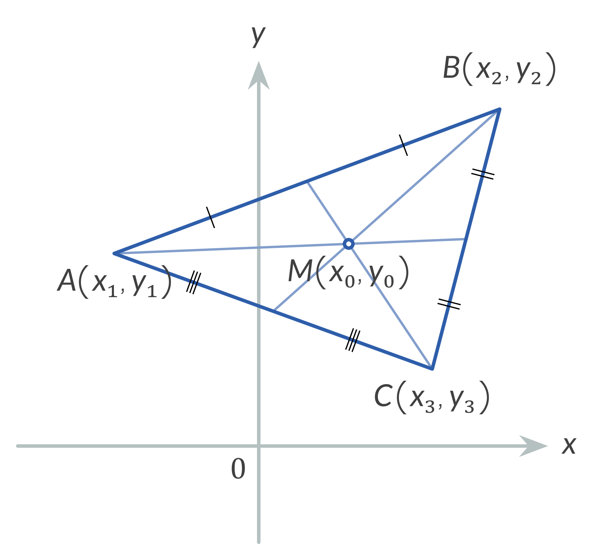
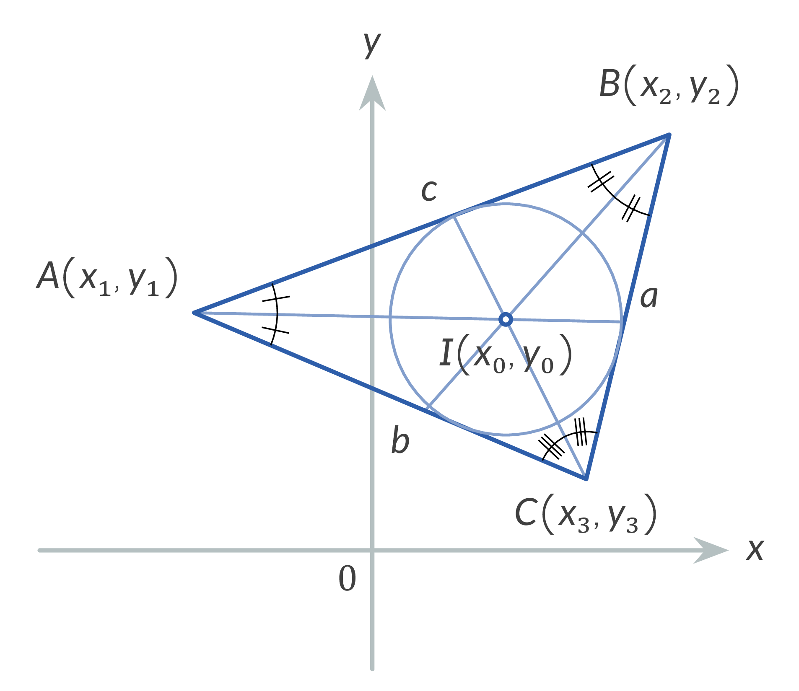
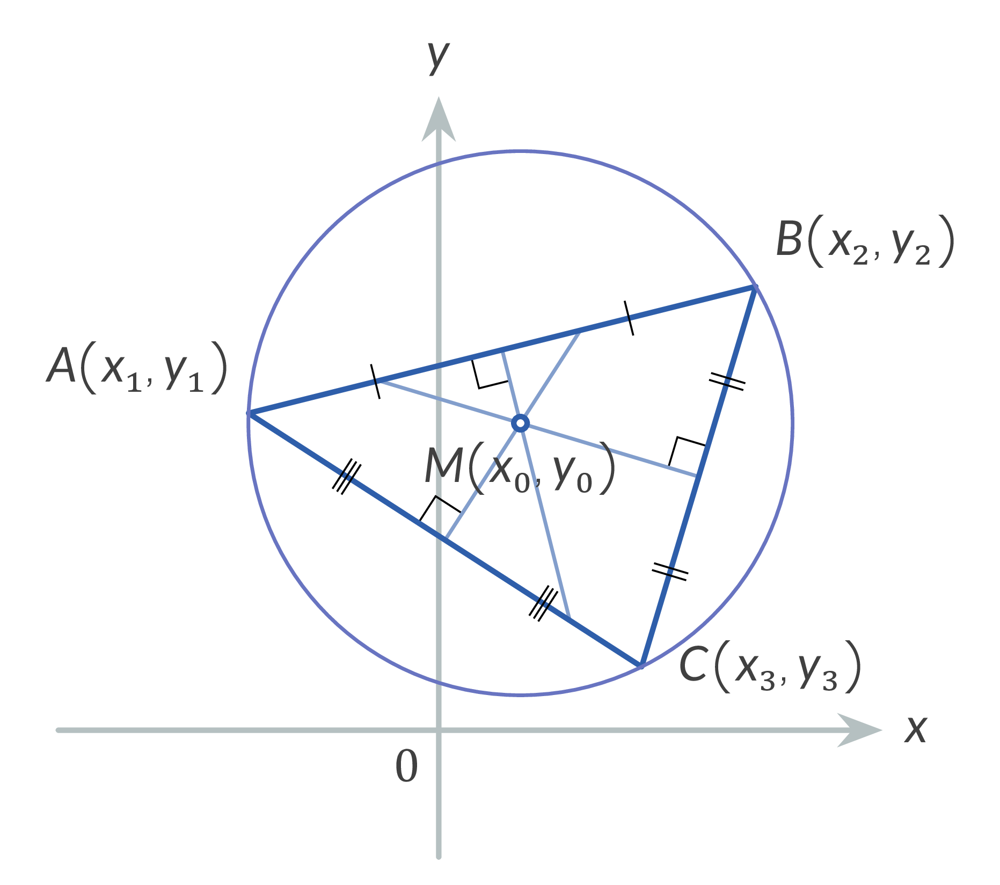
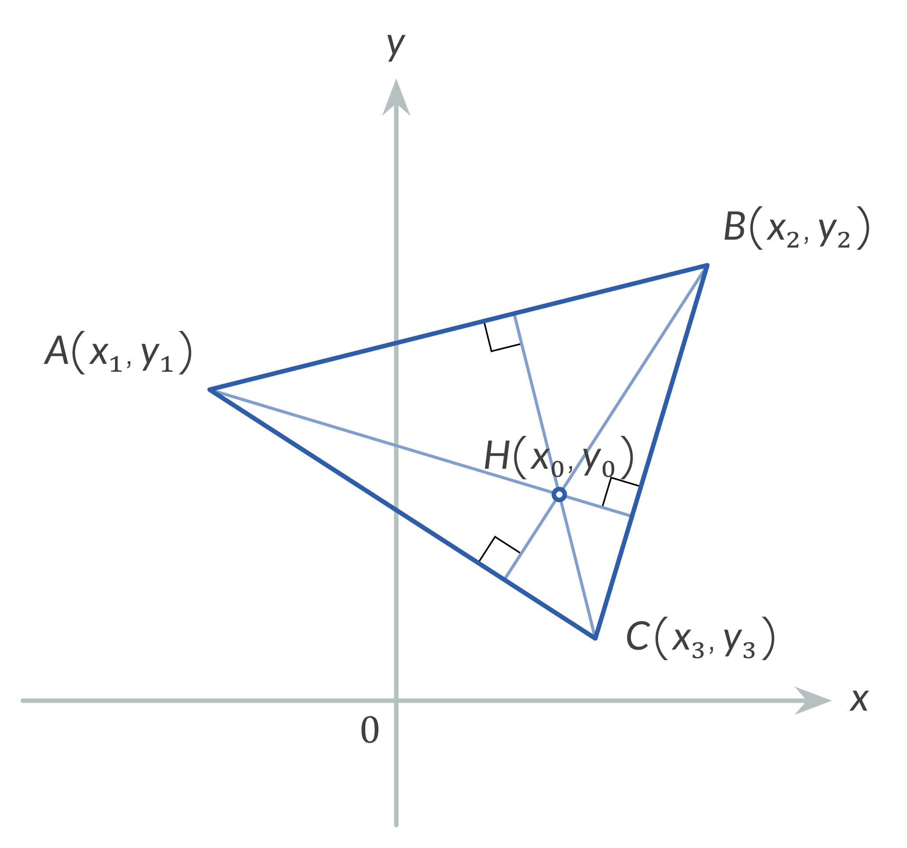
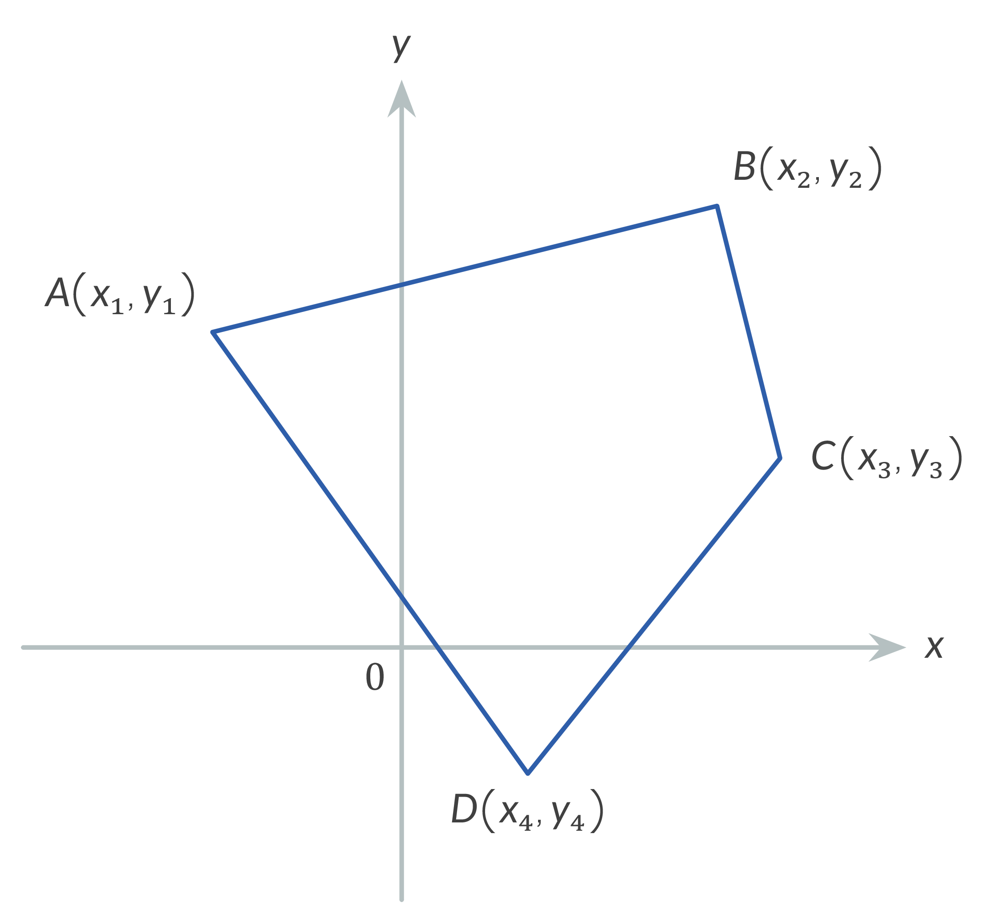
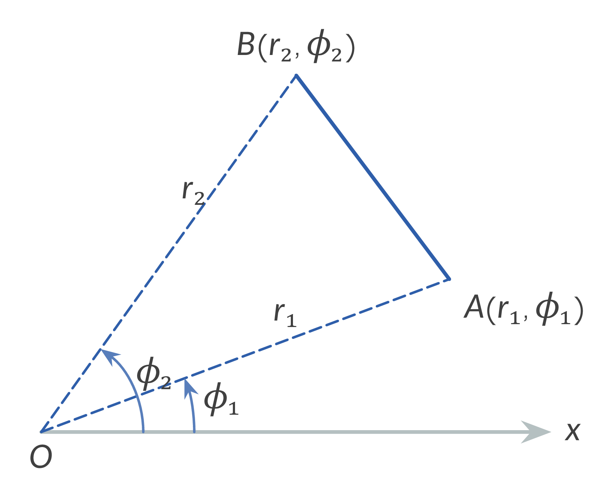
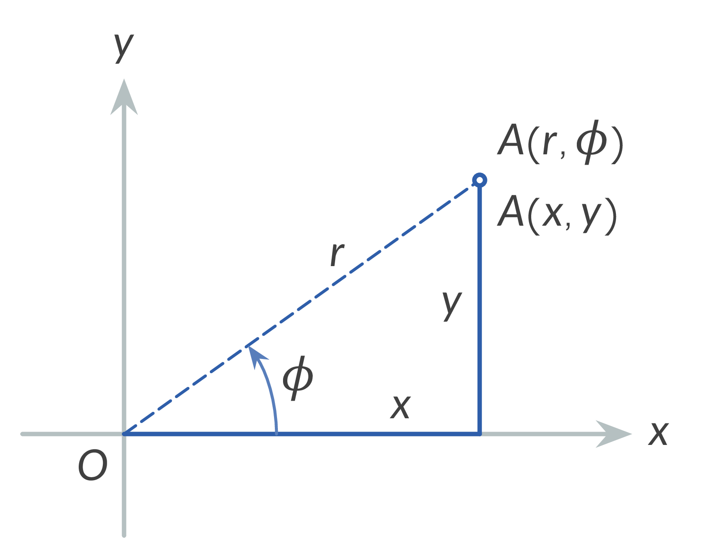

Coordinate Variables:
The following variables are used in two-dimensional systems:
1. Distance Between Two Points ($d$):
The distance $d$ between two points $A(x_{1}, y_{1})$ and $B(x_{2}, y_{2})$ is given by the formula:
$$d = AB = \sqrt{(x_{2} - x_{1})^{2} + (y_{2} - y_{1})^{2}}$$

2. Dividing a Line Segment in the Ratio $\lambda$ (Two-Dimensional):
The coordinates $(x_{0}, y_{0})$ of a point $C$ dividing the segment $AB$ in the ratio $\lambda = \frac{AC}{CB}$ (where $\lambda \neq -1$) are given by:
$$x_{0} = \frac{x_{1} + \lambda x_{2}}{1 + \lambda}, \quad y_{0} = \frac{y_{1} + \lambda y_{2}}{1 + \lambda}$$


3. Midpoint of a Line Segment (Two-Dimensional):
The coordinates $(x_{0}, y_{0})$ of the midpoint are found when $\lambda = 1$:
$$x_{0} = \frac{x_{1} + x_{2}}{2}, \quad y_{0} = \frac{y_{1} + y_{2}}{2}$$
4. Centroid of a Triangle:
The centroid (the intersection of the medians) of a triangle with vertices $A(x_{1}, y_{1})$, $B(x_{2}, y_{2})$, and $C(x_{3}, y_{3})$ has coordinates:
$$x_{0} = \frac{x_{1} + x_{2} + x_{3}}{3}, \quad y_{0} = \frac{y_{1} + y_{2} + y_{3}}{3}$$

5. Incenter of a Triangle (Intersection of Angle Bisectors):
The incenter $I(x_{0}, y_{0})$ of a triangle with vertices $A(x_{1}, y_{1})$, $B(x_{2}, y_{2})$, and $C(x_{3}, y_{3})$ is given by:
$$x_{0} = \frac{ax_{1} + bx_{2} + cx_{3}}{a + b + c}, \quad y_{0} = \frac{ay_{1} + by_{2} + cy_{3}}{a + b + c}$$
where $a = BC$, $b = CA$, and $c = AB$ represent the lengths of the sides opposite to the respective vertices.

6. Circumcenter of a Triangle (Intersection of the Side Perpendicular Bisectors):
The coordinates $(x_{0}, y_{0})$ of the circumcenter $O$ for a triangle with vertices $A(x_{1}, y_{1})$, $B(x_{2}, y_{2})$, and $C(x_{3}, y_{3})$ are determined using the following determinant formulas:
$$x_{0} = \frac{\begin{vmatrix} x_{1}^{2} + y_{1}^{2} & y_{1} & 1 \\ x_{2}^{2} + y_{2}^{2} & y_{2} & 1 \\ x_{3}^{2} + y_{3}^{2} & y_{3} & 1 \end{vmatrix}}{2 \begin{vmatrix} x_{1} & y_{1} & 1 \\ x_{2} & y_{2} & 1 \\ x_{3} & y_{3} & 1 \end{vmatrix}}, \quad y_{0} = \frac{\begin{vmatrix} x_{1} & x_{1}^{2} + y_{1}^{2} & 1 \\ x_{2} & x_{2}^{2} + y_{2}^{2} & 1 \\ x_{3} & x_{3}^{2} + y_{3}^{2} & 1 \end{vmatrix}}{2 \begin{vmatrix} x_{1} & y_{1} & 1 \\ x_{2} & y_{2} & 1 \\ x_{3} & y_{3} & 1 \end{vmatrix}}$$

7. Orthocenter (Intersection of Altitudes) of a Triangle:
The coordinates $(x_{0}, y_{0})$ of the orthocenter $H$ for a triangle with vertices $A(x_{1}, y_{1})$, $B(x_{2}, y_{2})$, and $C(x_{3}, y_{3})$ are given by the following determinant formulas:
$$x_{0} = \frac{\begin{vmatrix} y_{1} & x_{2}x_{3} + y_{1}^{2} & 1 \\ y_{2} & x_{3}x_{1} + y_{2}^{2} & 1 \\ y_{3} & x_{1}x_{2} + y_{3}^{2} & 1 \end{vmatrix}}{\begin{vmatrix} x_{1} & y_{1} & 1 \\ x_{2} & y_{2} & 1 \\ x_{3} & y_{3} & 1 \end{vmatrix}}, \quad y_{0} = \frac{\begin{vmatrix} x_{1}^{2} + y_{2}y_{3} & x_{1} & 1 \\ x_{2}^{2} + y_{3}y_{1} & x_{2} & 1 \\ x_{3}^{2} + y_{1}y_{2} & x_{3} & 1 \end{vmatrix}}{\begin{vmatrix} x_{1} & y_{1} & 1 \\ x_{2} & y_{2} & 1 \\ x_{3} & y_{3} & 1 \end{vmatrix}}$$

8. Area of a Triangle:
The area $S$ of a triangle with vertices $A(x_{1}, y_{1})$, $B(x_{2}, y_{2})$, and $C(x_{3}, y_{3})$ is calculated as:
$$S = (\pm)\frac{1}{2} \begin{vmatrix} x_{1} & y_{1} & 1 \\ x_{2} & y_{2} & 1 \\ x_{3} & y_{3} & 1 \end{vmatrix}$$
The sign is chosen to ensure the area is positive.
9. Area of a Quadrilateral:
The area $S$ of a quadrilateral with vertices $A(x_{1}, y_{1}), B(x_{2}, y_{2}), C(x_{3}, y_{3})$, and $D(x_{4}, y_{4})$ is calculated as:
$$S = (\pm)\frac{1}{2}[(x_{1}-x_{2})(y_{1}+y_{2}) + (x_{2}-x_{3})(y_{2}+y_{3}) + (x_{3}-x_{4})(y_{3}+y_{4}) + (x_{4}-x_{1})(y_{4}+y_{1})]$$
Note: In the formula for the area of a quadrilateral, the sign (+) or (-) is chosen to ensure the resulting area is a positive value.

10. Distance Between Two Points in Polar Coordinates:
The distance $d$ between two points $A$ and $B$ in a polar coordinate system is given by:
$$d = AB = \sqrt{r_{1}^{2} + r_{2}^{2} - 2r_{1}r_{2} \cos(\phi_{2} - \phi_{1})}$$

11. Distance Between Two Points in Polar Coordinates:
The distance $d = AB$ between two points $A(r_{1}, \phi_{1})$ and $B(r_{2}, \phi_{2})$ is given by:
$$d = AB = \sqrt{r_{1}^{2} + r_{2}^{2} - 2r_{1}r_{2} \cos(\phi_{2} - \phi_{1})}$$
12. Converting Rectangular Coordinates to Polar Coordinates:
The formulas to find Cartesian coordinates $(x, y)$ from polar coordinates $(r, \phi)$ are:
$$x = r \cos \phi, \quad y = r \sin \phi$$

13. Converting Polar Coordinates to Rectangular Coordinates:
To find the polar coordinates $(r, \phi)$ from Cartesian coordinates $(x, y)$, use:
$$r = \sqrt{x^{2} + y^{2}}, \quad \tan \phi = \frac{y}{x}$$